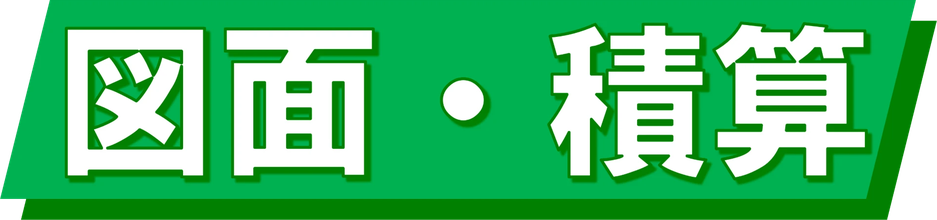

株式会社三浦工業
図面をかく → 数量・見積を自動算出
① 図面
② 割付
③ 断面
④ 3D
？
操作方法
① 図面作成
② 割り付け図表示
③ 断面図
④ 3Dビュー
↩ 戻る
↪ 進む
🗑 削除
✏ 描画
🖱 選択
◻ 中抜き
⛰ 段差ライン
⬚ 範囲選択
✋ 移動
選択を削除
∠ 角度
📏 寸法なし
🌙 ダークモード
▦ マス
📏 寸法
💾 保存
📂 開く
📷 写真から起こす
⿻ 2画面
1マス＝0.25m
1マス＝0.5m
1マス＝1.0m
サンプル形状
全削除
⚖ スケール合わせ
クリックした2点間の実際の距離を入力してください
m
確定
中止
🧵 割り付け表示
⬛ 押し出し
＋
－
◹
上から
◺
横から
⟲
回る
⟳
回る
⌂
全体
🌙
画面